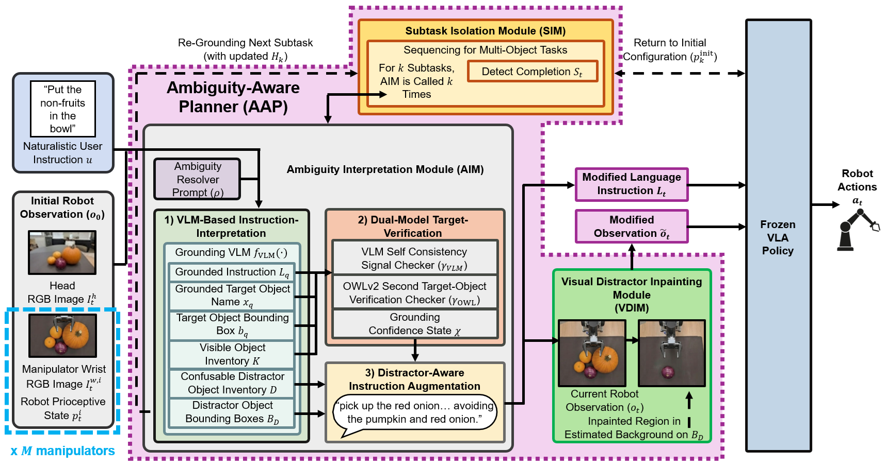

Vision-Language-Action (VLA) policies allow for robot manipulation using natural-language instructions and visual observations. However, ambiguous instructions may not provide the needed task information, making multiple objects plausible as manipulation targets. In this paper, we introduce Ambiguity-Aware Vision-Language-Action (A2-VLA), a zero-shot architecture for ambiguity-aware robot manipulation using frozen VLA policies. A2-VLA is the first architecture to jointly address ambiguity in both the natural-language instruction and visual observation. The intended manipulation task and corresponding target object are first inferred and verified using a Vision-Language-Model (VLM) scene understanding and open-vocabulary object detection. Visually competing object regions are then inpainted with local background estimates to provide a target-conditioned visual observation. For ambiguous multi-object instructions, sequential object-level subtasks are separated by detecting completion of the current subtask and re-evaluating the updated scene before selecting the next target object. Unlike the majority of existing frameworks, A2-VLA does not require task-specific VLA fine-tuning or additional user clarifications. Extensive experiments in simulated and real-world bimanual robot-manipulation environments validate the higher Success Rates and Normalized Task Scores of A2-VLA compared to other state-of-the-art methods for a range of manipulation tasks. An ablation study confirms the contributions of the main A2-VLA architecture components.
The proposed A2-VLA architecture consists of two main components, Fig. 1: 1) an Ambiguity-Aware Planner (AAP), which jointly addresses ambiguity in natural-language instructions and visual observations, and 2) a Frozen VLA Policy, which generates robot manipulation actions from the resulting explicit instruction and target-conditioned observation. The AAP consists of three modules: 1) the Ambiguity Interpretation Module (AIM), 2) the Visual Distractor Inpainting Module (VDIM), and 3) the Subtask Isolation Module (SIM). A naturalistic user instruction and initial robot observation are provided to the AIM, where the VLM-based instruction-interpretation submodule infers the task and candidate target, the dual-model target-verification submodule verifies it, and the distractor-aware instruction-augmentation submodule produces the instruction for the Frozen VLA Policy. The VDIM then inpaints visually confusable distractors in the robot observation before policy inference. For multi-object tasks, the SIM detects completed subtasks, returns the robot manipulator to its initial configuration, and processes the next subtask using the updated scene. The frozen VLA policy receives the modified language instruction and modified observation and outputs the robot actions without any parameter updates.

Fig 1. A2-VLA Architecture